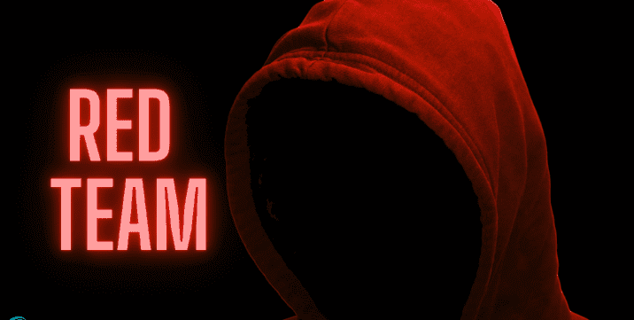

Red Team: Tim Penyerang
Red Team adalah tim yang berperan sebagai penyerang (hacker) untuk menguji pertahanan keamanan suatu organisasi.
Tugas Utama:
- Melakukan simulasi serangan nyata
- Mencari celah keamanan (vulnerabilities)
- Menguji respons tim pertahanan
- Social engineering testing
Tools yang Digunakan:
Metasploit, Nmap, Burp Suite, Cobalt Strike
"Red Team berpikir seperti hacker untuk menemukan kelemahan sebelum hacker nyata menemukannya."